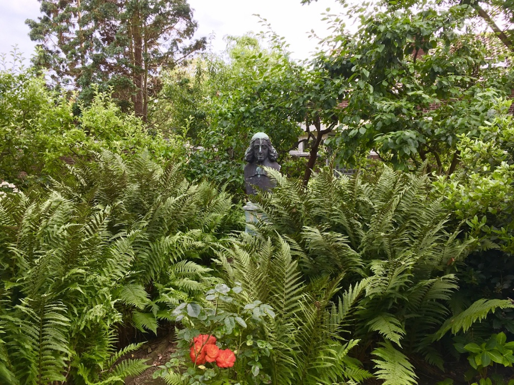

Spinoza on Composition, Monism and Beings of Reason, forthcoming in the Journal of Modern Philosophy
(with Karolina Hübner) Reconceiving Spinoza, by Samuel Newlands, Mind https://doi.org/10.1093/mind/fzz015
Paper on species
This paper is about a well-known difficulty concerning Spinoza theory of objective similarity between members of a species.
Paper on parallelism
This paper is about the motivations for the Spinozistic doctrine that everything is conceived; and every conceived thing exists.
Paper on intelligibility (with Karolina Hübner)
Moore on the Unreality of Agent-Relative Value (with Damian Melamedoff)
In his Principia Ethica Moore argues that Ethical Egoism is internally inconsistent, since there is no sense of “good for” that can vary from agent to agent. In this paper, we argue that Moore's argument can be better appreciated by comparing it to another contemporary argument: McTaggart's argument for the unreality of time. By appealing to Kit Fine's recent reconstruction of McTaggart's argument, we show that Moore's argument is structurally identical to McTaggart's. We then show that extant responses to Moore's argument are all analogous to some of the standard responses to McTaggart's. We conclude by examining the prospects of non-standard responses to Moore's argument, and tentatively endorse a fragmentalist account of agent-relative value.
Spinoza on Essence and Determination
Spinoza on Composition
Moore on the Unreality of Agent Relative Value (with Damian Melamedoff)
Spinoza on Objective Being and Modality
Spinoza's Two Concepts of Parthood

My picture of Spinoza as a part of nature in Rijnsburg.